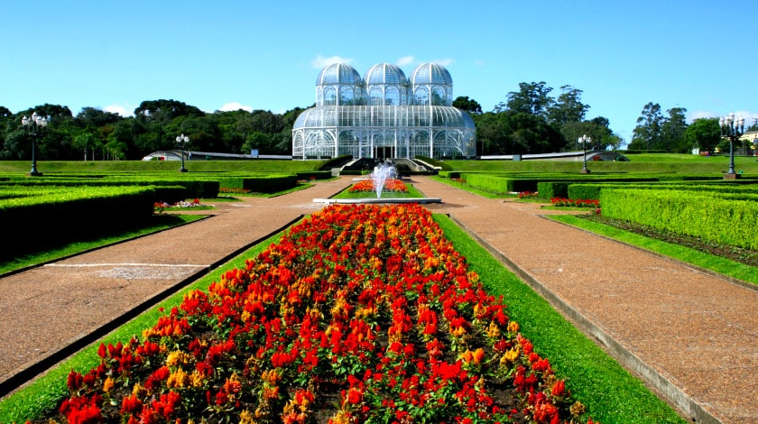
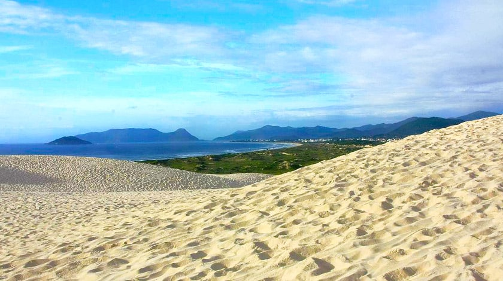
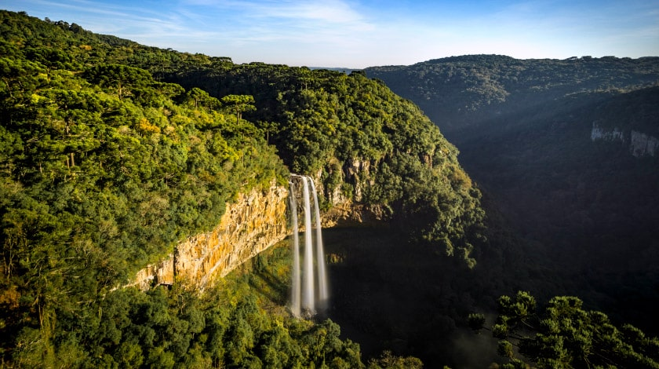
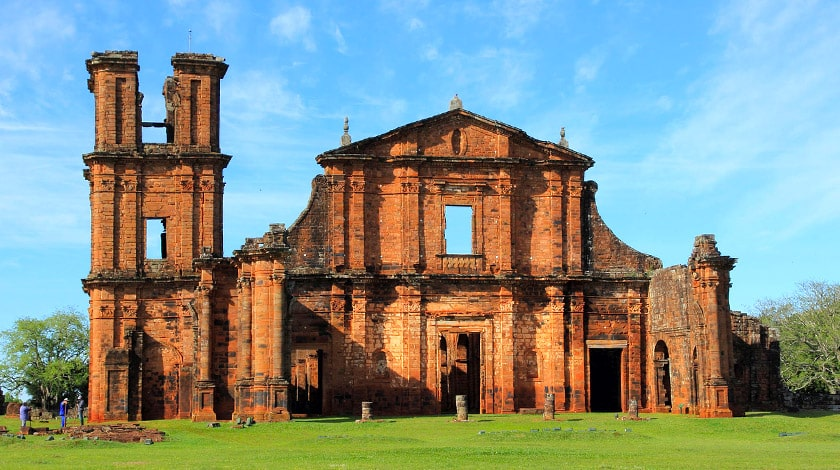

Cataratas do Iguaçu
Um dos pontos turísticos do Brasil mais dignos de estampar cartões-postais é, na
verdade, um tesouro compartilhado com nossos hermanos. As Cataratas do Iguaçu,
uma das mais incríveis formações da natureza, estão situadas na cidade de Foz do
Iguaçu, exatamente na fronteira com a Argentina. Suas 275 quedas chegam aos 80 m de
altura e atraem mais de 1 milhão de turistas por ano. Na votação para descobrir as
7 Novas Maravilhas da Natureza da New7Wonders Foundation, a exuberância das Cataratas
do Iguaçu emplacou ao lado de lugares paradisíacos, como a Baía Há Long, no Vietnã e a
Floresta Amazônica.
Jardim Botânico de Curitiba

Um dos principais pontos turísticos do Brasil e cartão-postal de Curitiba, o jardim
botânico inaugurado em 1991 está instalado em uma área que abrange cerca de 245 mil m²,
abrigando diversas espécies de plantas típicas da Mata Atlântica. Com três estufas
climatizadas e que remetem ao Palácio de Cristal da Europa do século XIX, o local
chama a atenção dos turistas da capital do Paraná. Além disso, toda a disposição das
flores, como o cultivo do espaço Sensações e seus 200 m de trilha em meio a labirintos
floridos, foi inspirada em famosos jardins franceses.
Dunas da Joaquina

Os cenários de Florianópolis, em Santa Catarina, são incríveis e uma das mais
imperdíveis atrações da capital é a Praia da Joaquina, que além de um mar azul
com ondas e areia branquinha, abriga uma enorme área tomada por dunas. A paisagem
é arrebatadora com pequenos lagos azuis, vegetação, o mar de fundo de um lado e a
Lagoa da Conceição do outro. Além de apreciar toda essa beleza de um dos pontos
turísticos do Brasil, para os mais corajosos a diversão também é garantida. Da maior
duna os visitantes podem deslizar pela areia com sandboard e esquibunda.
Cascata do Caracol

Cercada pela natureza da Serra Gaúcha, a charmosa cidade de Canela, pertinho de
Gramado, abriga mais um dos pontos turísticos do Brasil que todo bom viajante
deveria conhecer. A Cascata do Caracol está situada dentro do parque de mesmo nome,
tem 131 m de altura, trilhas que percorrem seu rio antes da grande queda, e vários
mirantes que proporcionam diferentes perspectivas da cachoeira monumental.
Sítio Arqueológico de São Miguel das Missões

O conjunto de ruínas da antiga Catedral de São Miguel é um dos principais
vestígios da época das Missões Jesuítas no Rio Grande do Sul. A igreja construída
no século XVIII, entre 1735 e 1745, foi declarada Patrimônio Histórico e Cultural
Mundial pela UNESCO e é procurada principalmente por turistas em busca das visitas
guiadas, onde é possível conhecer mais sobre a história da catequização dos povos
indígenas na região.